В одной из кодировок Unicode каждый символ кодируется 16 битами. Определите размер следующего предложения в данной кодировке: Как я любил твои отзывы, глухие звуки, бездны глас.
816 бит
408 байт
102 бит
51 байт
Ответ:
Для какого из приведённых чисел истинно высказывание: НЕ (число < 20) И (число чётное)?
8
15
21
36
Ответ:
Между населёнными пунктами A, B, C, D, E построены дороги, протяжённость которых (в километрах) приведена в таблице.
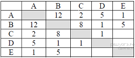
Определите длину кратчайшего пути между пунктами A и B. Передвигаться можно только по дорогам, протяжённость которых указана в таблице.
4
6
10
12
Ответ:
Дима хотел послушать музыку на компьютере, для этого ему нужно было включить музыкальный файл Белые_розы.mp3. Он начал работу с каталога С:\Музыка\Хиты. Сначала он спустился на один уровень вниз, в каталог Ретро, затем поднялся на один уровень вверх, потом спустился на один уровень в каталог Лучшие и нашёл там нужный музыкальный файл. Запишите полный путь к данному файлу.
С:\Музыка\Хиты\Лучшие\Белые_розы.mp3
С:\Музыка\Белые_розы.mp3
С:\Белые_розы.mp3
С:\Музыка\Хиты\Ретро\Белые_розы.mp3
Ответ:
Дан фрагмент электронной таблицы:
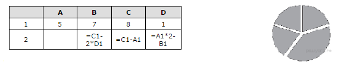
Какая из формул, приведённых ниже, может быть записана в ячейке A2, чтобы построенная после выполнения вычислений диаграмма по значениям диапазона ячеек A2:D2 соответствовала рисунку?
=(С1-В1) *2
=D1*4
=B1-D1
=(C1-2*D1)/2
Ответ:
Исполнитель Черепашка перемещается на экране компьютера, оставляя след в виде линии. В каждый конкретный момент известно положение исполнителя и направление его движения. У исполнителя существует две команды: Вперёд n (где n — целое число), вызывающая передвижение Черепашки на n шагов в направлении движения; Направо m (где m — целое число), вызывающая изменение направления движения на m градусов по часовой стрелке. Запись Повтори k [Команда1 Команда2 КомандаЗ] означает, что последовательность команд в скобках повторится k раз.
При выполнении какого из перечисленных ниже алгоритмов на экране появился правильный треугольник?
Повтори 3 [Вперёд 50 Направо 20 Направо 25]
Повтори 3 [Вперёд 50 Направо 100 Направо 20]
Повтори 6 [Вперёд 50 Направо 10 Направо 20]
Повтори 6 [Вперёд 50 Направо 20 Направо 40]
Ответ:
Ваня и Коля переписываются при помощи придуманного шифра. Фрагмент кодовой таблицы приведён ниже.
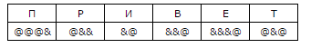
Расшифруйте сообщение, если известно, что в нём содержатся только буквы из предложенной таблицы. Разделителей между кодами букв нет:
&&@&&&@@&@&&&@@&&
Запишите в ответе расшифрованное сообщение.
Ответ:
В алгоритме, записанном ниже, используются переменные a и b. Символ «:=» обозначает оператор присваивания, знаки «+», «-», «*» и «/» — соответственно операции сложения, вычитания, умножения и деления. Правила выполнения операций и порядок действий соответствуют правилам арифметики. Определите значение переменной b после выполнения алгоритма:
а := 3b := 5a := 6 + a*bb := b + a/3
В ответе укажите одно целое число — значение переменной b.
Ответ:
Запишите значение переменной d, полученное в результате работы следующей программы. Текст программы приведён на трёх языках программирования.
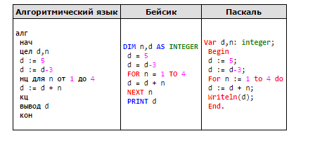
Ответ:
В таблице Dat хранятся данные о количестве учеников в классах (Dat[1] — количество учеников в первом классе, Dat[2] — во втором и т. д.). Определите, какое число будет напечатано в результате работы следующей программы. Текст программы приведён на трёх языках программирования.
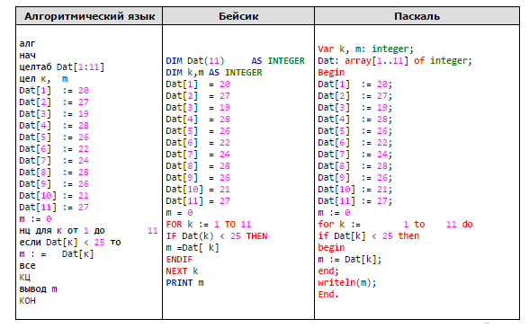
Ответ:
На рисунке — схема дорог, связывающих города А, Б, В, Г, Д, Е, К. По каждой дороге можно двигаться только в одном направлении, указанном стрелкой. Сколько существует различных путей из города А в город К?
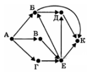
Ответ:
Ниже в табличной форме представлен фрагмент базы данных «Отправление поездов дальнего следования»:
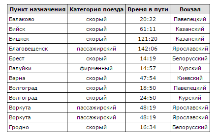
Сколько записей в данном фрагменте удовлетворяют условию
(Категория поезда = «скорый») И (Время в пути > 40:00)?
В ответе укажите одно число — искомое количество записей.
Ответ:
Переведите число 132 из десятичной системы счисления в двоичную систему счисления. Сколько единиц содержит полученное число? В ответе укажите одно число — количество единиц.
Ответ:
У исполнителя Квадратор две команды, которым присвоены номера:
1. возведи в квадрат2. прибавь 2
Первая из них возводит число на экране во вторую степень, вторая — прибавляет к числу 2. Составьте алгоритм получения из числа 1 числа 85, содержащий не более 5 команд. В ответе запишите только номера команд. В ответе запишите только номера команд. (Например, 21221 — это алгоритм: прибавь 2, возведи в квадрат, прибавь 2, прибавь 2, возведи в квадрат, который преобразует число 1 в 169.) Если таких алгоритмов более одного, то запишите любой из них.
Ответ:
Файл размером 9 Мбайт передаётся через некоторое соединение за 240 секунд. Определите размер файла (в Мбайт), который можно передать через это же соединение за 80 секунд. В ответе укажите одно число — размер файла в Мбайт. Единицы измерения писать не нужно.
Ответ:
Некоторый алгоритм из одной цепочки символов получает новую цепочку следующим образом. Сначала вычисляется длина исходной цепочки символов; если она нечётна, то удаляется последний символ цепочки, а если чётна, то в середину цепочки добавляется символ Б. В полученной цепочке символов каждая буква заменяется буквой, следующей за ней в русском алфавите (А — на Б, Б — на В и т. д., а Я — на А). Получившаяся таким образом цепочка является результатом работы алгоритма.
Например, если исходной была цепочка РУКА, то результатом работы алгоритма будет цепочка СФВЛБ, а если исходной была цепочка СОН, то результатом работы алгоритма будет цепочка ТП.
Дана цепочка символов БРА. Какая цепочка символов получится, если к данной цепочке применить описанный алгоритм дважды (т. е. применить алгоритм к данной цепочке, а затем к результату вновь применить алгоритм)? Русский алфавит: АБВГДЕЁЖЗИЙКЛМНОПРСТУФХЦЧШЩЪЫЬЭЮЯ.
Доступ к файлу tests.rar, находящемуся на сервере olympiada.ru, осуществляется по протоколу http. Фрагменты адреса файла закодированы буквами от А до Ж. Запишите последовательность этих букв, кодирующую адрес указанного файла в сети Интернет.
tests
http
/
.ru
olympiada
://
.rar
Ответ:
В таблице приведены запросы к поисковому серверу. Для каждого запроса указан его код — соответствующая буква от А до Г. Расположите коды запросов слева направо в порядке возрастания количества страниц, которые нашёл поисковый сервер по каждому запросу. По всем запросам было найдено разное количество страниц. Для обозначения логической операции «ИЛИ» в запросе используется символ «|», а для логической операции «И» — «&»:
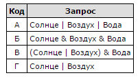
Ответ:
В электронную таблицу занесли данные о тестировании учеников. Ниже приведены первые пять строк таблицы:
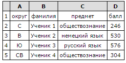
В столбце А записан округ, в котором учится ученик; в столбце В — фамилия; в столбце С — любимый предмет; в столбце D — тестовый балл. Всего в электронную таблицу были занесены данные по 1000 ученикам.
Выполните задание.
Откройте файл с данной электронной таблицей (расположение файла Вам сообщат организаторы экзамена). На основании данных, содержащихся в этой таблице, ответьте на два вопроса.
1. Сколько учеников в Южном округе (Ю) выбрали в качестве любимого предмета английский язык? Ответ на этот вопрос запишите в ячейку Н2 таблицы.
2. Каков средний тестовый балл у учеников Юго-Восточного округа (ЮВ)? Ответ на этот вопрос запишите в ячейку Н3 таблицы с точностью не менее двух знаков после запятой.
Скачать: Фаил
Выберите ОДНО из предложенных ниже заданий: 20.1 или 20.2.
20.1 Исполнитель Робот умеет перемещаться по лабиринту, начерченному на плоскости, разбитой на клетки. Между соседними (по сторонам) клетками может стоять стена, через которую Робот пройти не может. У Робота есть девять команд. Четыре команды — это команды-приказы:
вверх вниз влево вправо
При выполнении любой из этих команд Робот перемещается на одну клетку соответственно: вверх ↑ вниз ↓, влево ← , вправо →. Если Робот получит команду передвижения сквозь стену, то он разрушится. Также у Робота есть команда закрасить, при которой закрашивается клетка, в которой Робот находится в настоящий момент.
Ещё четыре команды — это команды проверки условий. Эти команды проверяют, свободен ли путь для Робота в каждом из четырёх возможных направлений:
сверху свободно снизу свободно слева свободно справа свободно
Эти команды можно использовать вместе с условием «если», имеющим следующий вид:
если условие то
последовательность команд
все
Здесь условие — одна из команд проверки условия. Последовательность команд — это одна или несколько любых команд-приказов. Например, для передвижения на одну клетку вправо, если справа нет стенки, и закрашивания клетки можно использовать такой алгоритм:
если справа свободно то
вправо
закрасить
все
В одном условии можно использовать несколько команд проверки условий, применяя логические связки и, или, не, например:
если (справа свободно) и (не снизу свободно) то
вправо
все
Для повторения последовательности команд можно использовать цикл «пока», имеющий следующий вид:
нц пока условие
последовательность команд
кц
Например, для движения вправо, пока это возможно, можно использовать следующий алгоритм:
нц пока справа свободно
вправо
кц
Выполните задание.
На бесконечном поле имеется прямоугольник, ограниченный стенами. Длины сторон прямоугольника неизвестны. Робот находится внутри прямоугольника. На рисунке укзан один из возможных способов расположения стен и Робота (Робот обозначен буквой «Р»).
Напишите для Робота алгоритм, закрашивающий верхние угловые клетки. Робот должен закрасить только клетки, удовлетворяющие данному условию. Например, для приведённого выше рисунка Робот должен закрасить следующие клетки (см. рисунок).
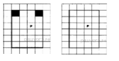
Конечное расположение Робота может быть произвольным. Алгоритм должен решать задачу для произвольного размера поля и любого допустимого расположения стен внутри прямоугольного поля. При исполнении алгоритма Робот не должен разрушиться, выполнение алгоритма должно завершиться. Алгоритм может быть выполнен в среде формального исполнителя или записан в текстовом редакторе. Сохраните алгоритм в текстовом файле.
20.2 Напишите программу, которая в последовательности целых чисел определяет количество нечётных чисел, кратных 3. Программа получает на вход целые числа, количество введённых чисел неизвестно, последовательность чисел заканчивается числом 0 (0 — признак окончания ввода, не входит в последовательность). Количество чисел не превышает 1000. Введённые числа по модулю не превышают 30 000. Программа должна вывести два числа: длину последовательности (завершающий 0 не учитывается) и количество нечётных чисел, кратных 3.
Пример работы программы:
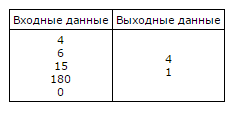